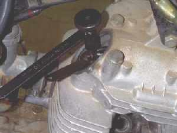
So what happens if there is too little clearance? Well, for one thing the valve loses most of it's heat through the valve seat. If the valve doesn't seat fully it will start to get hotter and hotter. Sooner or later the valve starts to melt or burn. Not good. Now if the clearance is too much the valve train components will be hammered every time the valve opens. Again, not good but better then too hot.
To prevent these problems some engines use hydraulic tappets which pump up with engine oil while the engine is running and keep the right clearance. The newer Honda Gold Wings have them and so do the Honda and Kawasaki V-twins. Harley-Davidson Big Twins have them too, not to mention others. Now for some reason everybody thinks valves loosen as the miles pile up but they don't, at least they don't unless you have lubrication problems. (So change your oil, OK? Well, at least check it now and then... maybe?). If an engine is running right the valve will slowly wear its way into the engine, taking up clearance until the valve is held open and burns. So you need to check the valves at regular intervals until you find out at what rate they are wearing. You can use your shop manual as a guide to how many miles to go between checks but, you will need to check several times to know for sure.
Over Head Cams With Rocker Arms
AH... now we get to the whole purpose of this page, how we adjust the valves. The engine must be dead cold before we can adjust anything, so let it sit overnight. First, we will 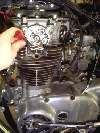
If you can't get a wrench on the flywheel nut don't worry. You can turn the engine over by jacking the rear wheel off the ground and putting the transmission in top gear. Now simply turn the rear wheel to turn the engine. If you can't find the flywheel marks look at the intake valve as you turn the engine over in the forward direction. When it goes down and then up, take a long thin screw driver and stick it down the spark plug hole. Continue to turn the engine over until the piston touches the tip of the screw driver. Continue to turn the engine. Be careful not to jam or bind the screw driver in the spark plug hole. The piston will push the screw driver up. When it stops and starts to go down, that is TDC of the compression stroke. This will work on all piston engines.
Now we are ready to check/adjust valve clearances. For engines with rocker arms and screw type adjusters, take a feeler gauge of the right size and place it between the end tip of the valve and the screw adjuster. If it is out of specification use a wrench or Valve Adjusting Tool to loosen the screw and change it. Sometimes you can use a regular wrench and screw driver to adjust things and sometimes you must have the special tool. When you push the feeler gauge between the valve tip and the adjuster screw there should be a little bit of resistance. One way of doing it is the go-no-go way. If a .003" feeler gauge fits but a .004" feeler gauge does not, the clearance must be .003". On most engines the intake clearances will be tighter then the exhaust clearances... but not always! Sometimes they are the same. I have never seen an engine where the exhaust is tighter then the intake.

2014 UPDATE! Mark Zimmerman, Technical Editor Motorcycle Cruiser Magazine, e-mailed me and informed me I was wrong. He says "T140 Triumphs are the exception. valve lash is; intake .008, exhaust .006. Triumph did it that way to slightly retard intake cam timing, and kill some of the bottom end power, They were afraid the 750 motor would chew up main bearings if the cam timing were advanced." I went and looked it up and guess what? Mark you are right. My only excuse is that I have never had a T140 come into the shop. T120s (650cc motor) have looser exhausts then intakes and I HAVE had T120s come in for tune-ups but never a T140. The information is right there in the shop manual, next line down. Like I always say "Check your shop manual."
If you are going to make an error, error on the loose side. I've found most engines prefer their valves a bit loose but only one or two thou... not much more. I like to hear just a hint of valve noise. Complete silence bothers me. I keep seeing valves roasting. If you have one rocker arm, operating two valves, with two screw adjusters, you will get a more accurate adjustment if you use two feeler gauges. Loosen both screw adjusters, put the right sized feeler gauges in each tappet and then adjust both at the same time. When both feeler gauges feel like they have the same resistance, tighten the lock nuts, pull them out and you are done.
Remember to always double check your work. The clearance can change when you tighten the lock nut. Sometimes you have to set the tappet loose and when you tighten the lock nut it will pull the tappet into the right clearance.
Shim Type Adjusters
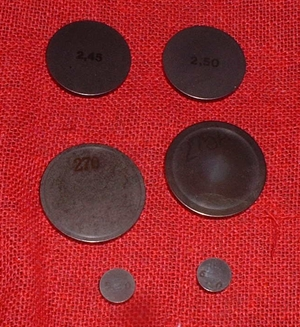 Valve Shims |
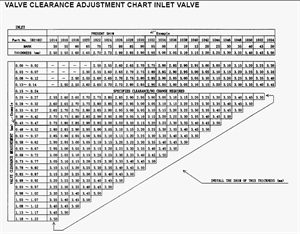 Valve Shim Table |
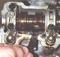
At $10 to $15 per shim. Let's see... a 4 cylinder , 4 valve engine has 16 shims... WOW, that adds up fast. AND you are replacing good parts. The shims rarely wear out. Good news is you can swap shims between valves. Tight one for a loose one, loose one for a tight one, and save some money.
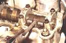 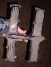

Now you will find that things look a bit different from a rocker engine... namely, there aren't any rockers. Well, except of course, when there are. They call them cam followers. More about that later. You will notice the cam and the shim are real close together. To get that shim out first put that cylinder at Top-Dead-Center of the compression stroke. Then rotate the shim bucket till the notch on it is out. Then rotate the engine so the cam lobe pushes the shim and shim bucket down. Now you use a special tool to hold the edge of the shim bucket down and rotate the cam lobe out of the way. You may have to do this several times to get it right. Reach in the notch with a small screw driver and pop the shim up. Remove it with tweezers. Look on the down side of the shim and it will give you it's size. If you can't make out the numbers, measure it with dial calipers. Sounds so easy doesn't it?
Now when you put in the special too be very careful and don't force anything. Go slow. It all should feel very smooth. If it feels like it is binding... IT IS. DON'T FORCE IT you can break very expensive parts very easily. Consider yourself warned! The Yamaha XS series of engines uses a different tool. But the idea is still the same. Naturally, there are different tools for each make of engine. The tools are not too expensive so I just buy them, but I think you could make them too. They all work on the same principle. You have to hold down the edge of the shim bucket, but not the shim, against the valve spring pressure.
Some engines, like the KX650 Kawasaki and Polaris ATV engines have the shim UNDER the shim bucket or cup. You must remove the cams to adjust the valves. There are some others that do that too. Real smart work fellows!
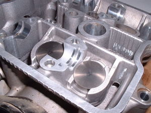 Shim under Cup 1 |
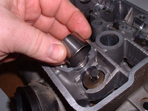 Shim under Cup 2 |
Sometimes, if the shim is on top of the cup (KLR600, KL650), you can remove the chain adjuster (to loosen the cam chain). Remove the cam bearing caps. Then move the cam up just a bit and get the shim out. That way you don't loose your cam timing. However, always double check the timing after you are finished just to be sure.
Sometimes they do get it right. On the ZX1100 Kawasaki getting to the shims involves pushing a Rocker Arm, also known as a Cam Follower, out of the way with a small screwdriver and popping the shim out. No special tools or nothing. Sweet!
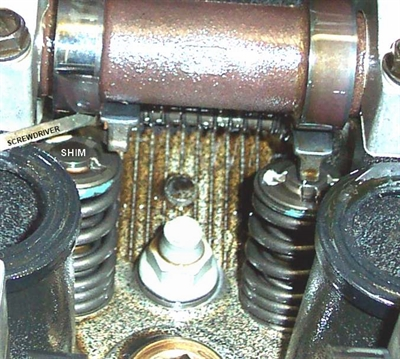
The shims come in different diameters too. You can use the same shim in different make engines as long as they are the same diameter and, of course, the right thickness.
Always put the side with the size stamped on it in down. That is so the cam lobe will not wear the size markings off. Shim sizes usually come in .05 mm (.002") increments. Like 255, 260, 265, 270, ETC. So 255 is 2.55 mm in thickness. 2.60 is 2.60 mm. Sometimes the decimal point is not there and sometimes the whole number is not there or so faint you can't read it. Sometimes, the factory adds a letter to the mix. Why I don't know. Also, there are a lot of aftermarket shims out there in increments of .001". If in doubt measure with dial calipers. A real nice, accurate one can be bought from Harbor Freight for $10-$15. I prefer to measure them and then get the right Shim. I don't like all the factory tables and grafts and charts, Oh my!
As always, remember to double check your work. We are dealing with very small clearances here. One thousandth of an inch is not much. The shims can go in cockeyed, oil is under the shim, stuff like that can effect the clearance. Make sure the shims are seated right. I like to turn the engine over by hand several times to seat the shims and check again. If you have to error, error on the loose side.
Push rod engines like BSA, older Triumphs, older BMWs etc. have rocker arms and adjust just like the OHC rocker arm engines. I like to put in the feeler gauge and then spin the push rod with my fingers. It should spin freely with no up and down play. If I want the clearance to be a bit tight I tighten the adjuster till the rod spins a bit hard. Looser? Adjust till it spins real easy. Then take out the feeler gauge.
On Harley-Davidson V-Twins with solid tappets. When one valve is open the corresponding valve on the other cylinder is closed. When the rear exhaust is open, the front exhaust is closed. Same for intake. Adjust the push rod, when the valve is closed, so that it turns easy with no up and down play, both intake and exhaust.
Hydraulic Tappets are filled with oil and normally require no adjustment of any kind except for adjustment when the engine is being assembled.
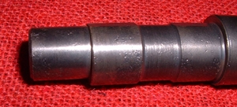 Eccentric Shaft |
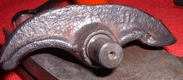 Eccentric Shaft in Rocker Arm |

The old Honda 350 and 450cc twins had what are called eccentric rocker arm shafts. That is, the center of the shaft is ground off center so that as you turn it, the rocker arm that rides on it, moves back and forth. This increases and decreases the valve clearance. If you adjust the valves on these engines the regular way with a feeler gauge you will be OK But, there is a better way.
Start and warm the engine up enough so that it idles good. Loosen each valve adjuster lock nut and turn the adjuster shaft with a screw driver. The valve will get noisy and the engine RPM will go up. You want the highest engine RPM with the lowest tappet noise. Do this on each valve. You will notice that the engine RPMs go way up. Sometimes as much as 1000 to 1500 RPM gain. Now back the idle down with the throttle stop screws and do it again. We want the highest RPMs and the least tappet noise, with the emphasis on the RPM. Yes, they will be noisy but, where do you think that RPM is coming from? Stock clearance too tight? I learned this trick from a factory mechanic when I worked in a Honda shop in 1968. He said he learned it from a Honda Factory update school. I have never heard of it from any other source. It works though. I've used it on a lot of 350/450 twins with no ill effects.
Some people feel that leaves the valve clearance too loose. If you are one of those people it is OK, just don't set your tappets that way.
Honda TR200 ATV engines also use Eccentric adjusters. Set the engine at Top-Dead-Center of the compression stroke and then loosen the adjusters. Then, as the shop manual states "Move each adjuster to the left (Counterclockwise) until resistance is felt. Then move each adjuster back to the right, the equivalent of 1/2 marked graduation. Tighten both valve adjuster lock bolts. Note: 1/2 graduation on the adjusters equals 0.08 mm (0.003 in), which is the specified valve clearance."
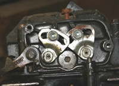 TR200 Valve Adjustment 1 |
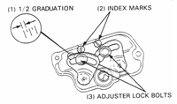 TR200 Valve Adjustment 2 |
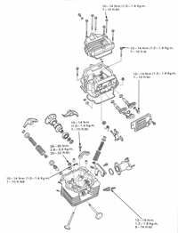 TR200 Valve Adjustment 3 |
If my poor dim, dark memory serves there were some British engines, like the BSA B25, 250 cc single, that used them too. Don't worry, I don't think you will run across very many of them. If you do, the drill is still the same. Set crankshaft at Top-Dead-Center (TDC), compression stroke. Loosen the adjuster lock nut/bolt. Turn the adjuster shaft till you get the clearance you want. Tighten the lock but/bolt. Your are done.
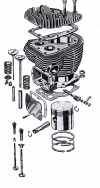
Some of the Old, Old singles and V-Twins, 30s/40s/50s type stuff had side valves. You remove a plate on the side of the cylinder and adjust things from there. Just like all the rest. These are getting pretty rare now so you will probably not run into them.
The thing to remember on all these engines is that you MUST have clearance and that clearance must be checked at regular intervals. If you don't know or don't remember when they were last checked, check them now.

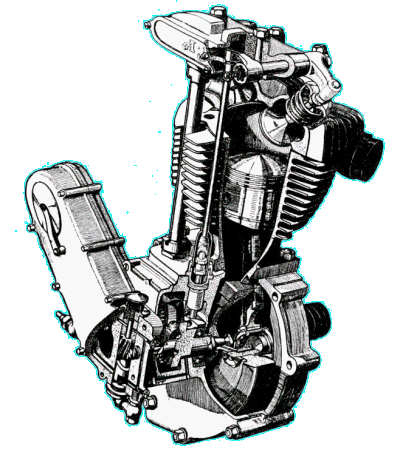 |
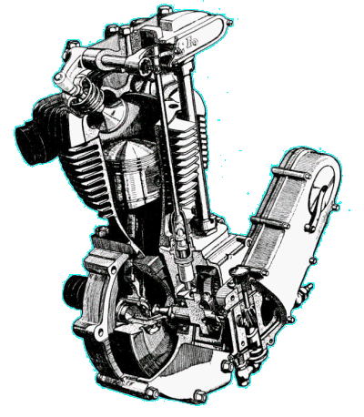 |
Copyright © 1999-2002 dansmc.com. All rights reserved.